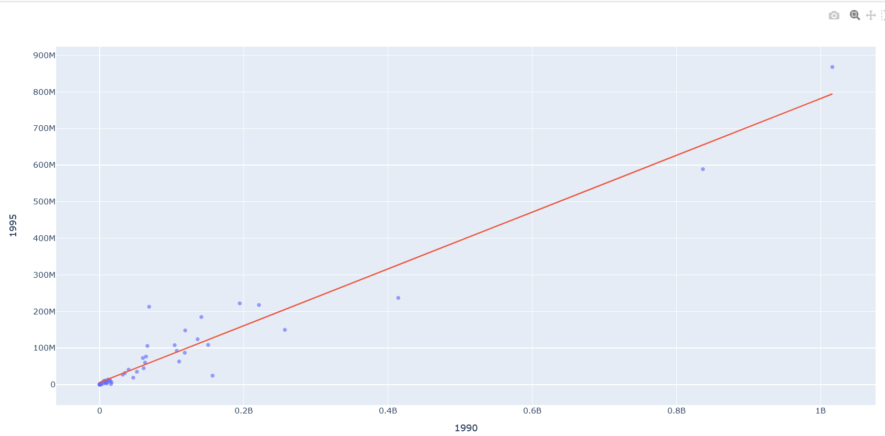
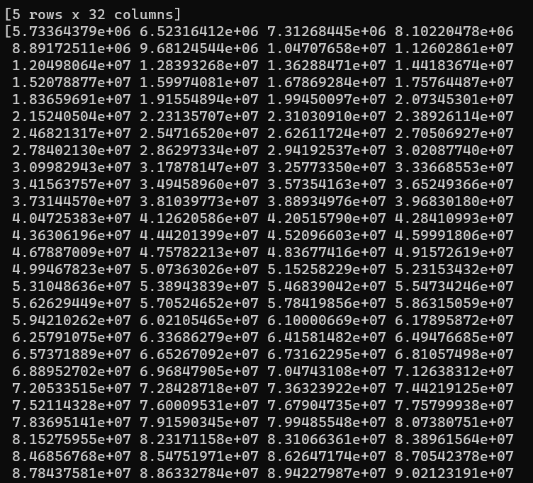

On this page I will showcase Linear regression which allows the user to visualise the machine learning algorithm behind it. This was built with a completley random dataset I found that gives specific countries coffee exports.
import pandas as pd
import numpy as np
from sklearn.model_selection import train_test_split
from sklearn.linear_model import LinearRegression
import plotly.express as px
import plotly.graph_objects as go
data = pd.read_csv("C:/Users/Caedmon/Documents/BA_DA/Coffee_export.csv")
print(data.head())
x = data["1990"].values.reshape(-1, 1)
y = data["1995"]
model = LinearRegression()
model.fit(x, y)
x_range = np.linspace(x.min(), x.max(), 1000)
y_range = model.predict(x_range.reshape(-1, 1))
fig = px.scatter (data, x="1990", y="1995", opacity=0.65)
fig.add_traces(go.Scatter(x=x_range, y=y_range, name="Linear Regression"))
print(y_range)
fig.show()
import pandas as pd
import numpy as np
from sklearn.model_selection import train_test_split
from sklearn.linear_model import LinearRegression
import plotly.express as px
import plotly.graph_objects as go
For the first step in this code I had to install the necessary libraries. pandas for data manipulation, numpy for numerical operarions, train_test_split and LinearRegression from sklearn.model_selection for splitting the data and creating a linear regression model, and plotly.express and plotly.graph_objects for creating interactive visualisations.
data = pd.read_csv("C:/Users/Caedmon/Documents/Learning_Python/Coffee_export.csv")
The next section is where the code reads a CSV file, in this example 'Coffee_exports.csv' using the pd.read_csv function and stores it in the data DataFrame.
print(data.head())
This section prints the first few rows of the dataset using print(data.head()) to give an overview of the data structure.
x = data["1990"].values.reshape(-1, 1)
y = data["1995"]
The code extracts the feature (x) and target (y) variables from the dataset. x is the "1990" column reshaped to a 2D array, and y is the "1995" column.
model = LinearRegression()
A Linear Regression model is created using LinearRegression().
model.fit(x, y)
The model is trained using the fit method with the feature (x) and target (y) data.
x_range = np.linspace(x.min(), x.max(), 1000)
x_range is created as a range of values between the min and max values of the original "1990" column.
y_range = model.predict(x_range.reshape(-1, 1))
The trained model is used to predict the corresponding y values for the x_range.
fig = px.scatter (data, x="1990", y="1995", opacity=0.65)
fig.add_traces(go.Scatter(x=x_range, y=y_range, name="Linear Regression"))
A scatter plot is created using px.scatter from Plotly Express, and a line plot for the linear regression line is aded using go.scatter.
print(y_range)
Although self-explanatory, I will detail regardless. The predicted y values for the x_range are printed.
fig.show()
The final plot is displayed using fig.show().
Once the code is run we should recieve the following output:

The above image shows a Linear Regression line which is output by the code and shows the 'trend' or 'mean' values of the data read by the program. As well as this output, the code also requests the next 1000 iterations as a prediction. Thus the following output should also be given:
